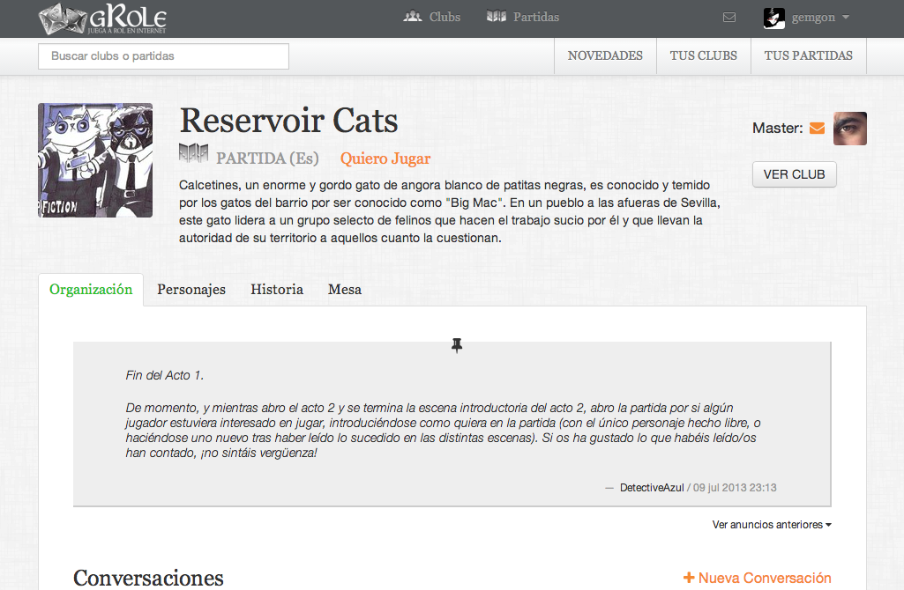

gRole Visitar sitio
Es una startup en desarrollo para jugar a rol en internet. Soy la responsable del diseño de la interfaz siendo la usabilidad y la sencillez en la muestra de los contenidos mi objetivo principal de trabajo. Por otra parte me he encargado de personalizar la capa de estilo de bootstrap para adaptarlo a la marca.
Alpha Research Station Ver más
Es una plataforma diseñanda para conectar a la comunidad científica con la comunidad Open Source. Mi papel ha sido diseñar la interfaz y el diseño visual.
BBVA Visitar sitio
Maquetación del nuevo sitio del Centro de Innovación del BBVA. Trabajo realizado formando parte del equipo de diseño de ASPgems
Our Kids App Ver más
Prototipado de una aplicación web para mejorar la comunicación entre padres y profesores.
Inditec Visitar sitio
Rediseño del sitio web corporativo. Juanjo que me ayude con el copy.
Otros trabajos
- RWD
- Styling
- CMS
- Prototipado
- Diseño Visual